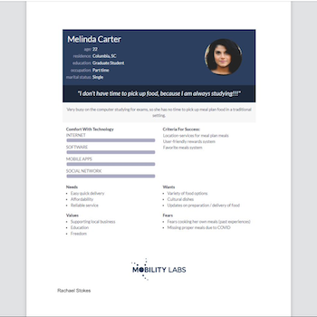
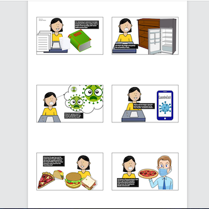
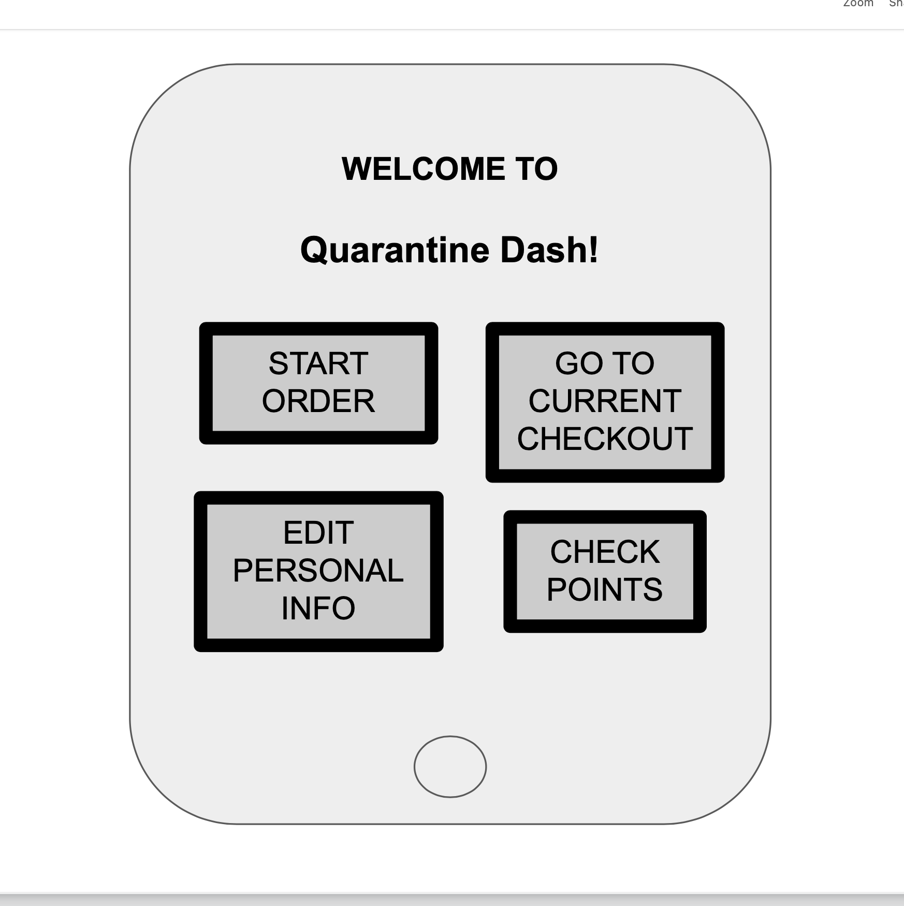
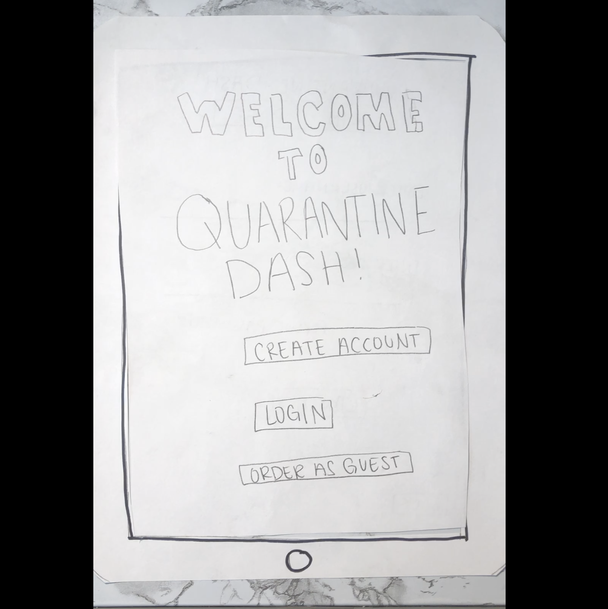

Problem Statement: Quarantine Dash!

Our users are frustrated that while they are in quarantine they do not get a chance to choose what food they eat. They receive premade boxed meals delivered to their doors for each meal. Our solution should provide these students with the ability to choose and order food through the university meal plan and have it delivered to their door.
Affinity Diagram: Quarantine Dash!

My group and I worked as a team to create ideas about Quarantine Dash!
Persona: 4 personas for Quarantine Dash!

Four personas to represent typical users of a Quarantine Dash! app.
Storyboard: 4 storyboards for Quarantine Dash!

Four situations that represent typical uses of our Quarantine Dash! application.
Sketches: Quarantine Dash!

Rough ideas of how our application may work.
Paper Prototype: Quarantine Dash!

A paper walk through of the potential look of how using the application might work.